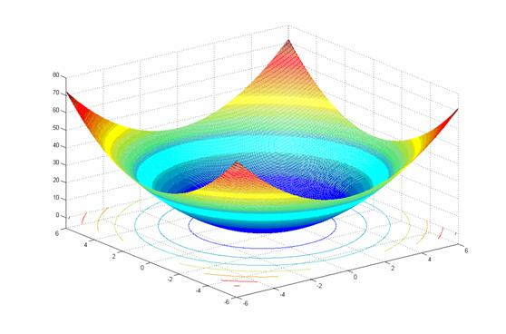

Library Reference¶
This chapter provides a complete reference to all of the functionality included in inspyred.
Evolutionary Computation¶
ec – Evolutionary computation framework¶
This module provides a framework for creating evolutionary computations.
-
class
inspyred.ec.Bounder(lower_bound=None, upper_bound=None)¶ Defines a basic bounding function for numeric lists.
This callable class acts as a function that bounds a numeric list between the lower and upper bounds specified. These bounds can be single values or lists of values. For instance, if the candidate is composed of five values, each of which should be bounded between 0 and 1, you can say
Bounder([0, 0, 0, 0, 0], [1, 1, 1, 1, 1])or justBounder(0, 1). If either thelower_boundorupper_boundargument isNone, the Bounder leaves the candidate unchanged (which is the default behavior).As an example, if the bounder above were used on the candidate
[0.2, -0.1, 0.76, 1.3, 0.4], the resulting bounded candidate would be[0.2, 0, 0.76, 1, 0.4].A bounding function is necessary to ensure that all evolutionary operators respect the legal bounds for candidates. If the user is using only custom operators (which would be aware of the problem constraints), then those can obviously be tailored to enforce the bounds on the candidates themselves. But the built-in operators make only minimal assumptions about the candidate solutions. Therefore, they must rely on an external bounding function that can be user-specified (so as to contain problem-specific information).
In general, a user-specified bounding function must accept two arguments: the candidate to be bounded and the keyword argument dictionary. Typically, the signature of such a function would be the following:
bounded_candidate = bounding_function(candidate, args)
This function should return the resulting candidate after bounding has been performed.
Public Attributes:
- lower_bound – the lower bound for a candidate
- upper_bound – the upper bound for a candidate
-
class
inspyred.ec.DiscreteBounder(values)¶ Defines a basic bounding function for numeric lists of discrete values.
This callable class acts as a function that bounds a numeric list to a set of legitimate values. It does this by resolving a given candidate value to the nearest legitimate value that can be attained. In the event that a candidate value is the same distance to multiple legitimate values, the legitimate value appearing earliest in the list will be used.
For instance, if
[1, 4, 8, 16]was used as the values parameter, then the candidate[6, 10, 13, 3, 4, 0, 1, 12, 2]would be bounded to[4, 8, 16, 4, 4, 1, 1, 8, 1].Public Attributes:
- values – the set of attainable values
- lower_bound – the smallest attainable value
- upper_bound – the largest attainable value
-
class
inspyred.ec.Individual(candidate=None, maximize=True)¶ Represents an individual in an evolutionary computation.
An individual is defined by its candidate solution and the fitness (or value) of that candidate solution. Individuals can be compared with one another by using <, <=, >, and >=. In all cases, such comparisons are made using the individuals’ fitness values. The
maximizeattribute is respected in all cases, so it is better to think of, for example, < (less-than) to really mean “worse than” and > (greater-than) to mean “better than”. For instance, if individuals a and b have fitness values 2 and 4, respectively, and ifmaximizewereTrue, then a < b would be true. IfmaximizewereFalse, then a < b would be false (because a is “better than” b in terms of the fitness evaluation, since we’re minimizing).Note
Individualobjects are almost always created by the EC, rather than the user. Theevolvemethod of the EC also has amaximizeargument, whose value is passed directly to all created individuals.Public Attributes:
- candidate – the candidate solution
- fitness – the value of the candidate solution
- birthdate – the system time at which the individual was created
- maximize – Boolean value stating use of maximization
-
exception
inspyred.ec.Error¶ An empty base exception.
-
exception
inspyred.ec.EvolutionExit¶ An exception that may be raised and caught to end the evolution.
This is an empty exception class that can be raised by the user at any point in the code and caught outside of the
evolvemethod.Note
Be aware that ending the evolution in such a way will almost certainly produce an erroneous population (e.g., not all individuals will have been reevaluated, etc.). However, this approach can be viable if solutions have been archived such that the current population is not of critical importance.
-
class
inspyred.ec.EvolutionaryComputation(random)¶ Represents a basic evolutionary computation.
This class encapsulates the components of a generic evolutionary computation. These components are the selection mechanism, the variation operators, the replacement mechanism, the migration scheme, the archival mechanism, the terminators, and the observers.
The
observer,terminator, andvariatorattributes may be specified as lists of such operators. In the case of theobserver, all elements of the list will be called in sequence during the observation phase. In the case of theterminator, all elements of the list will be combined via logicalorand, thus, the evolution will terminate if any of the terminators return True. Finally, in the case of thevariator, the elements of the list will be applied one after another in pipeline fashion, where the output of one variator is used as the input to the next.Public Attributes:
- selector – the selection operator (defaults to
default_selection) - variator – the (possibly list of) variation operator(s) (defaults to
default_variation) - replacer – the replacement operator (defaults to
default_replacement) - migrator – the migration operator (defaults to
default_migration) - archiver – the archival operator (defaults to
default_archiver) - observer – the (possibly list of) observer(s) (defaults to
default_observer) - terminator – the (possibly list of) terminator(s) (defaults to
default_termination) - logger – the logger to use (defaults to the logger ‘inspyred.ec’)
The following attributes do not have legitimate values until after the
evolvemethod executes:- termination_cause – the name of the function causing
evolveto terminate, in the event that multiple terminators are used - generator – the generator function passed to
evolve - evaluator – the evaluator function passed to
evolve - bounder – the bounding function passed to
evolve - maximize – Boolean stating use of maximization passed to
evolve - archive – the archive of individuals
- population – the population of individuals
- num_evaluations – the number of fitness evaluations used
- num_generations – the number of generations processed
Note that the attributes above are, in general, not intended to be modified by the user. (They are intended for the user to query during or after the
evolvemethod’s execution.) However, there may be instances where it is necessary to modify them within other functions. This is possible to do, but it should be the exception, rather than the rule.If logging is desired, the following basic code segment can be used in the
mainor calling scope to accomplish that:import logging logger = logging.getLogger('inspyred.ec') logger.setLevel(logging.DEBUG) file_handler = logging.FileHandler('inspyred.log', mode='w') file_handler.setLevel(logging.DEBUG) formatter = logging.Formatter('%(asctime)s - %(name)s - %(levelname)s - %(message)s') file_handler.setFormatter(formatter) logger.addHandler(file_handler)
Protected Attributes:
- _random – the random number generator object
- _kwargs – the dictionary of keyword arguments initialized from the args parameter in the evolve method
-
evolve(generator, evaluator, pop_size=100, seeds=None, maximize=True, bounder=None, **args)¶ Perform the evolution.
This function creates a population and then runs it through a series of evolutionary epochs until the terminator is satisfied. The general outline of an epoch is selection, variation, evaluation, replacement, migration, archival, and observation. The function returns a list of elements of type
Individualrepresenting the individuals contained in the final population.Arguments:
- generator – the function to be used to generate candidate solutions
- evaluator – the function to be used to evaluate candidate solutions
- pop_size – the number of Individuals in the population (default 100)
- seeds – an iterable collection of candidate solutions to include in the initial population (default None)
- maximize – Boolean value stating use of maximization (default True)
- bounder – a function used to bound candidate solutions (default None)
- args – a dictionary of keyword arguments
The bounder parameter, if left as
None, will be initialized to a defaultBounderobject that performs no bounding on candidates. Note that the _kwargs class variable will be initialized to the args parameter here. It will also be modified to include the following ‘built-in’ keyword argument:- _ec – the evolutionary computation (this object)
- selector – the selection operator (defaults to
-
class
inspyred.ec.GA(random)¶ Evolutionary computation representing a canonical genetic algorithm.
This class represents a genetic algorithm which uses, by default, rank selection, n-point crossover, bit-flip mutation, and generational replacement. In the case of bit-flip mutation, it is expected that each candidate solution is a
Sequenceof binary values.Optional keyword arguments in
evolveargs parameter:- num_selected – the number of individuals to be selected (default len(population))
- crossover_rate – the rate at which crossover is performed (default 1.0)
- num_crossover_points – the n crossover points used (default 1)
- mutation_rate – the rate at which mutation is performed (default 0.1)
- num_elites – number of elites to consider (default 0)
-
class
inspyred.ec.ES(random)¶ Evolutionary computation representing a canonical evolution strategy.
This class represents an evolution strategy which uses, by default, the default selection (i.e., all individuals are selected), an internal adaptive mutation using strategy parameters, and ‘plus’ replacement. It is expected that each candidate solution is a
Sequenceof real values.The candidate solutions to an ES are augmented by strategy parameters of the same length (using
inspyred.ec.generators.strategize). These strategy parameters are evolved along with the candidates and are used as the mutation rates for each element of the candidates. The evaluator is modified internally to use only the actual candidate elements (rather than also the strategy parameters), so normal evaluator functions may be used seamlessly.Optional keyword arguments in
evolveargs parameter:- tau – a proportionality constant (default None)
- tau_prime – a proportionality constant (default None)
- epsilon – the minimum allowed strategy parameter (default 0.00001)
If tau is
None, it will be set to1 / sqrt(2 * sqrt(n)), wherenis the length of a candidate. If tau_prime isNone, it will be set to1 / sqrt(2 * n). The strategy parameters are updated as follows:\[\sigma_i^\prime = \sigma_i + e^{\tau \cdot N(0, 1) + \tau^\prime \cdot N(0, 1)}\]\[\sigma_i^\prime = max(\sigma_i^\prime, \epsilon)\]
-
class
inspyred.ec.EDA(random)¶ Evolutionary computation representing a canonical estimation of distribution algorithm.
This class represents an estimation of distribution algorithm which uses, by default, truncation selection, an internal estimation of distribution variation, and generational replacement. It is expected that each candidate solution is a
Sequenceof real values.The variation used here creates a statistical model based on the set of candidates. The offspring are then generated from this model. This function also makes use of the bounder function as specified in the EC’s
evolvemethod.Optional keyword arguments in
evolveargs parameter:- num_selected – the number of individuals to be selected (default len(population)/2)
- num_offspring – the number of offspring to create (default len(population))
- num_elites – number of elites to consider (default 0)
-
class
inspyred.ec.DEA(random)¶ Evolutionary computation representing a differential evolutionary algorithm.
This class represents a differential evolutionary algorithm which uses, by default, tournament selection, heuristic crossover, Gaussian mutation, and steady-state replacement. It is expected that each candidate solution is a
Sequenceof real values.Optional keyword arguments in
evolveargs parameter:- num_selected – the number of individuals to be selected (default 2)
- tournament_size – the tournament size (default 2)
- crossover_rate – the rate at which crossover is performed (default 1.0)
- mutation_rate – the rate at which mutation is performed (default 0.1)
- gaussian_mean – the mean used in the Gaussian function (default 0)
- gaussian_stdev – the standard deviation used in the Gaussian function (default 1)
-
class
inspyred.ec.SA(random)¶ Evolutionary computation representing simulated annealing.
This class represents a simulated annealing algorithm. It accomplishes this by using default selection (i.e., all individuals are parents), Gaussian mutation, and simulated annealing replacement. It is expected that each candidate solution is a
Sequenceof real values. Consult the documentation for thesimulated_annealing_replacementfor more details on the keyword arguments listed below.Note
The
pop_sizeparameter toevolvewill always be set to 1, even if a different value is passed.Optional keyword arguments in
evolveargs parameter:- temperature – the initial temperature
- cooling_rate – a real-valued coefficient in the range (0, 1) by which the temperature should be reduced
- mutation_rate – the rate at which mutation is performed (default 0.1)
- gaussian_mean – the mean used in the Gaussian function (default 0)
- gaussian_stdev – the standard deviation used in the Gaussian function (default 1)
emo – Evolutionary multiobjective optimization¶
This module provides the framework for making multiobjective evolutionary computations.
-
class
inspyred.ec.emo.NSGA2(random)¶ Evolutionary computation representing the nondominated sorting genetic algorithm.
This class represents the nondominated sorting genetic algorithm (NSGA-II) of Kalyanmoy Deb et al. It uses nondominated sorting with crowding for replacement, binary tournament selection to produce population size children, and a Pareto archival strategy. The remaining operators take on the typical default values but they may be specified by the designer.
-
class
inspyred.ec.emo.PAES(random)¶ Evolutionary computation representing the Pareto Archived Evolution Strategy.
This class represents the Pareto Archived Evolution Strategy of Joshua Knowles and David Corne. It is essentially a (1+1)-ES with an adaptive grid archive that is used as a part of the replacement process.
-
class
inspyred.ec.emo.Pareto(values=None, maximize=True)¶ Represents a Pareto multiobjective solution.
A Pareto solution is a set of multiobjective values that can be compared to other Pareto values using Pareto preference. This means that a solution dominates, or is better than, another solution if it is better than or equal to the other solution in all objectives and strictly better in at least one objective.
Since some problems may mix maximization and minimization among different objectives, an optional maximize parameter may be passed upon construction of the Pareto object. This parameter may be a list of Booleans of the same length as the set of objective values. If this parameter is used, then the maximize parameter of the evolutionary computation’s
evolvemethod should be left as the default True value in order to avoid confusion. (Setting the evolve‘s parameter to False would essentially invert all of the Booleans in the Pareto maximize list.) So, if all objectives are of the same type (either maximization or minimization), then it is best simply to use the maximize parameter of the evolve method and to leave the maximize parameter of the Pareto initialization set to its default True value. However, if the objectives are mixed maximization and minimization, it is best to leave theevolve‘s maximize parameter set to its default True value and specify the Pareto’s maximize list to the appropriate Booleans.The typical usage is as follows:
@inspyred.ec.evaluators.evaluator def my_evaluator(candidate, args): obj1 = 1 # Calculate objective 1 obj2 = 2 # Calculate objective 2 obj3 = 3 # Calculate objective 3 return emo.Pareto([obj1, obj2, obj3])
analysis – Optimization result analysis¶
This module provides analysis methods for the results of evolutionary computations.
-
inspyred.ec.analysis.allele_plot(file, normalize=False, alleles=None, generations=None)¶ Plot the alleles from each generation from the individuals file.
This function creates a plot of the individual allele values as they change through the generations. It creates three subplots, one for each of the best, median, and average individual. The best and median individuals are chosen using the fitness data for each generation. The average individual, on the other hand, is actually an individual created by averaging the alleles within a generation. This function requires the matplotlib library.
Note
This function only works for single-objective problems.

An example image saved from the
allele_plotfunction.Arguments:
- file – a file-like object representing the individuals file produced by the file_observer
- normalize – Boolean value stating whether allele values should be normalized before plotting (default False)
- alleles – a list of allele index values that should be plotted (default None)
- generations – a list of generation numbers that should be plotted (default None)
If alleles is
None, then all alleles are plotted. Similarly, if generations isNone, then all generations are plotted.
-
inspyred.ec.analysis.fitness_statistics(population)¶ Return the basic statistics of the population’s fitness values.
This function returns a dictionary containing the “best”, “worst”, “mean”, “median”, and “std” fitness values in the population. (“std” is the standard deviation.) A typical usage would be similar to the following:
stats = fitness_statistics(population) print(stats['best']) print(stats['worst']) print(stats['mean']) print(stats['median']) print(stats['std'])
Note
This function makes use of the numpy library for calculations. If that library is not found, it attempts to complete the calculations internally. However, this second attempt will fail for multiobjective fitness values and will return
nanfor the mean, median, and standard deviation.Arguments:
- population – the population of individuals
-
inspyred.ec.analysis.generation_plot(file, errorbars=True)¶ Plot the results of the algorithm using generation statistics.
This function creates a plot of the generation fitness statistics (best, worst, median, and average). This function requires the matplotlib library.
Note
This function only works for single-objective problems.

An example image saved from the
generation_plotfunction (without error bars).Arguments:
- file – a file-like object representing the statistics file produced by the file_observer
- errorbars – Boolean value stating whether standard error bars should be drawn (default True)
-
inspyred.ec.analysis.hypervolume(pareto_set, reference_point=None)¶ Calculates the hypervolume by slicing objectives (HSO).
This function calculates the hypervolume (or S-measure) of a nondominated set using the Hypervolume by Slicing Objectives (HSO) procedure of While, et al. (IEEE CEC 2005). The pareto_set should be a list of lists of objective values. The reference_point may be specified or it may be left as the default value of None. In that case, the reference point is calculated to be the maximum value in the set for all objectives (the ideal point). This function assumes that objectives are to be maximized.
Arguments:
- pareto_set – the list or lists of objective values comprising the Pareto front
- reference_point – the reference point to be used (default None)
utilities – Optimization utility functions¶
This module provides utility classes and decorators for evolutionary computations.
-
class
inspyred.ec.utilities.Objectify(func)¶ Create an “objectified” version of a function.
This function allows an ordinary function passed to it to become essentially a callable instance of a class. For inspyred, this means that evolutionary operators (selectors, variators, replacers, etc.) can be created as normal functions and then be given the ability to have attributes that are specific to the object. Python functions can always have attributes without employing any special mechanism, but those attributes exist for the function, and there is no way to create a new “object” except by implementing a new function with the same functionality. This class provides a way to “objectify” the same function multiple times in order to provide each “object” with its own set of independent attributes.
The attributes that are created on an objectified function are passed into that function via the ubiquitous
argsvariable in inspyred. Any user-specified attributes are added to theargsdictionary and replace any existing entry if necessary. If the function modifies those entries in the dictionary (e.g., when dynamically modifying parameters), the corresponding attributes are modified as well.Essentially, a local copy of the
argsdictionary is created into which the attributes are inserted. This modified local copy is then passed to the function. After the function returns, the values of the attributes from the dictionary are retrieved and are used to update the class attributes.The typical usage is as follows:
def typical_function(*args, **kwargs): # Implementation of typical function pass fun_one = Objectify(typical_function) fun_two = Objectify(typical_function) fun_one.attribute = value_one fun_two.attribute = value_two
-
inspyred.ec.utilities.memoize(func=None, maxlen=None)¶ Cache a function’s return value each time it is called.
This function serves as a function decorator to provide a caching of evaluated fitness values. If called later with the same arguments, the cached value is returned instead of being re-evaluated.
This decorator assumes that candidates are individually pickleable, and their pickled values are used for hashing into a dictionary. It should be used when evaluating an expensive fitness function to avoid costly re-evaluation of those fitnesses. The typical usage is as follows:
@memoize def expensive_fitness_function(candidates, args): # Implementation of expensive fitness calculation pass
It is also possible to provide the named argument maxlen, which specifies the size of the memoization cache to use. (If maxlen is
None, then an unbounded cache is used.) Once the size of the cache has reached maxlen, the oldest element is replaced by the newest element in order to keep the size constant. This usage is as follows:@memoize(maxlen=100) def expensive_fitness_function(candidates, args): # Implementation of expensive fitness calculation pass
Warning
The
maxlenparameter must be passed as a named keyword argument, or anAttributeErrorwill be raised (e.g., saying@memoize(100)will cause an error).
Operators¶
An evolutionary computation is composed of many parts:
- an archiver – stores solutions separate from the population (e.g., in a multiobjective EC)
- an evaluator – measures the fitness of candidate solutions; problem-dependent
- a generator – creates new candidate solutions; problem-dependent
- a migrator – moves individuals to other populations (in the case of distributed ECs)
- observers – view the progress of an EC in operation; may be a list of observers
- a replacer – determines the survivors of a generation
- a selector – determines the parents of a generation
- terminators – determine whether the evolution should stop; may be a list of terminators
- variators – modify candidate solutions; may be a list of variators
Each of these parts may be specified to create custom ECs to suit particular problems.
archivers – Solution archival methods¶
This module provides pre-defined archivers for evoluationary computations.
All archiver functions have the following arguments:
- random – the random number generator object
- population – the population of individuals
- archive – the current archive of individuals
- args – a dictionary of keyword arguments
Each archiver function returns the updated archive.
Note
The population is really a shallow copy of the actual population of the evolutionary computation. This means that any activities like sorting will not affect the actual population.
-
inspyred.ec.archivers.adaptive_grid_archiver(random, population, archive, args)¶ Archive only the best individual(s) using a fixed size grid.
This function archives the best solutions by using a fixed-size grid to determine which existing solutions should be removed in order to make room for new ones. This archiver is designed specifically for use with the Pareto Archived Evolution Strategy (PAES).
Optional keyword arguments in args:
- max_archive_size – the maximum number of individuals in the archive (default len(population))
- num_grid_divisions – the number of grid divisions (default 1)
-
inspyred.ec.archivers.best_archiver(random, population, archive, args)¶ Archive only the best individual(s).
This function archives the best solutions and removes inferior ones. If the comparison operators have been overloaded to define Pareto preference (as in the
Paretoclass), then this archiver will form a Pareto archive.
-
inspyred.ec.archivers.default_archiver(random, population, archive, args)¶ Do nothing.
This function just returns the existing archive (which is probably empty) with no changes.
-
inspyred.ec.archivers.population_archiver(random, population, archive, args)¶ Archive the current population.
This function replaces the archive with the individuals of the current population.
evaluators – Fitness evaluation methods¶
Evaluator functions are problem-specific. This module provides pre-defined evaluators for evolutionary computations.
All evaluator functions have the following arguments:
- candidates – the candidate solutions
- args – a dictionary of keyword arguments
-
inspyred.ec.evaluators.evaluator(evaluate)¶ Return an inspyred evaluator function based on the given function.
This function generator takes a function that evaluates only one candidate. The generator handles the iteration over each candidate to be evaluated.
The given function
evaluatemust have the following signature:fitness = evaluate(candidate, args)
This function is most commonly used as a function decorator with the following usage:
@evaluator def evaluate(candidate, args): # Implementation of evaluation pass
The generated function also contains an attribute named
single_evaluationwhich holds the original evaluation function. In this way, the original single-candidate function can be retrieved if necessary.
-
inspyred.ec.evaluators.parallel_evaluation_mp(candidates, args)¶ Evaluate the candidates in parallel using
multiprocessing.This function allows parallel evaluation of candidate solutions. It uses the standard multiprocessing library to accomplish the parallelization. The function assigns the evaluation of each candidate to its own job, all of which are then distributed to the available processing units.
Note
All arguments to the evaluation function must be pickleable. Those that are not will not be sent through the
argsvariable and will be unavailable to your function.Required keyword arguments in args:
- mp_evaluator – actual evaluation function to be used (This function should have the same signature as any other inspyred evaluation function.)
Optional keyword arguments in args:
- mp_nprocs – number of processors that will be used (default machine cpu count)
-
inspyred.ec.evaluators.parallel_evaluation_pp(candidates, args)¶ Evaluate the candidates in parallel using Parallel Python.
This function allows parallel evaluation of candidate solutions. It uses the Parallel Python (pp) library to accomplish the parallelization. This library must already be installed in order to use this function. The function assigns the evaluation of each candidate to its own job, all of which are then distributed to the available processing units.
Note
All arguments to the evaluation function must be pickleable. Those that are not will not be sent through the
argsvariable and will be unavailable to your function.Required keyword arguments in args:
- pp_evaluator – actual evaluation function to be used (This function should have the same signature as any other inspyred evaluation function.)
Optional keyword arguments in args:
- pp_dependencies – tuple of functional dependencies of the serial evaluator (default ())
- pp_modules – tuple of modules that must be imported for the functional dependencies (default ())
- pp_servers – tuple of servers (on a cluster) that will be used for parallel processing (default (“*”,))
- pp_secret – string representing the secret key needed to authenticate on a worker node (default “inspyred”)
- pp_nprocs – integer representing the number of worker processes to start on the local machine (default “autodetect”, which sets it to the number of processors in the system)
For more information about these arguments, please consult the documentation for Parallel Python.
generators – Solution generation methods¶
Generator functions are problem-specific. They are used to create the initial set of candidate solutions needed by the evolutionary computation.
All generator functions have the following arguments:
- random – the random number generator object
- args – a dictionary of keyword arguments
-
class
inspyred.ec.generators.diversify(generator)¶ Ensure uniqueness of candidates created by a generator.
This function decorator is used to enforce uniqueness of candidates created by a generator. The decorator maintains a list of previously created candidates, and it ensures that new candidates are unique by checking a generated candidate against that list, regenerating if a duplicate is found. The typical usage is as follows:
@diversify def generator_function(random, args): # Normal generator function pass
If a list of seeds is used, then these can be specified prior to the generator’s use by saying the following:
@diversify def generator_function(random, args): # Normal generator function pass generator_function.candidates = seeds
-
inspyred.ec.generators.strategize(generator)¶ Add strategy parameters to candidates created by a generator.
This function decorator is used to provide a means of adding strategy parameters to candidates created by a generator. The generator function is modifed to extend the candidate with
len(candidate)strategy parameters (one per candidate element). Each strategy parameter is initialized to a random value in the range [0, 1]. The typical usage is as follows:@strategize def generator_function(random, args): # Normal generator function pass
migrators – Solution migration methods¶
This module provides pre-defined migrators for evolutionary computations.
All migrator functions have the following arguments:
- random – the random number generator object
- population – the population of Individuals
- args – a dictionary of keyword arguments
Each migrator function returns the updated population.
Migrator functions would typically be used for multi-population approaches, such as island-model evolutionary computations. They provide a means for individuals to be transferred from one population to another during the evolutionary process.
-
class
inspyred.ec.migrators.MultiprocessingMigrator(max_migrants=1)¶ Migrate among processes on the same machine.
This callable class allows individuals to migrate from one process to another on the same machine. It maintains a queue of migrants whose maximum length can be fixed via the
max_migrantsparameter in the constructor. If the number of migrants in the queue reaches this value, new migrants are not added until earlier ones are consumed. The unreliability of a multiprocessing environment makes it difficult to provide guarantees. However, migrants are theoretically added and consumed at the same rate, so this value should determine the “freshness” of individuals, where smaller queue sizes provide more recency.An optional keyword argument in
argsrequires the migrant to be evaluated by the current evolutionary computation before being inserted into the population. This can be important when different populations use different evaluation functions and you need to be able to compare “apples with apples,” so to speak.The migration takes the current individual I out of the queue, if one exists. It then randomly chooses an individual E from the population to insert into the queue. Finally, if I exists, it replaces E in the population (re-evaluating fitness if necessary). Otherwise, E remains in the population and also exists in the queue as a migrant.
Optional keyword arguments in args:
- evaluate_migrant – should new migrants be evaluated before adding them to the population (default False)
-
inspyred.ec.migrators.default_migration(random, population, args)¶ Do nothing.
This function just returns the existing population with no changes.
observers – Algorithm monitoring methods¶
This module provides pre-defined observers for evolutionary computations.
All observer functions have the following arguments:
- population – the population of Individuals
- num_generations – the number of elapsed generations
- num_evaluations – the number of candidate solution evaluations
- args – a dictionary of keyword arguments
Note
The population is really a shallow copy of the actual population of the evolutionary computation. This means that any activities like sorting will not affect the actual population.
-
class
inspyred.ec.observers.EmailObserver(username, password, server, port=587)¶ Email the population statistics, individuals, and optional file observer data.
This callable class allows information about the current generation to be emailed to a user. This is useful when dealing with computationally expensive optimization problems where the evolution must progress over hours or days. The
generation_stepattribute can be set to an integer greater than 1 to ensure that emails are only sent on generations that are multiples of the step size.Note
This function makes use of the
inspyred.ec.analysis.fitness_statisticsfunction, so it is subject to the same requirements.A typical instantiation of this class would be the following:
import getpass usr = raw_input("Enter your username: ") pwd = getpass.getpass("Enter your password: ") email_observer = EmailObserver(usr, pwd, "my.mail.server") email_observer.from_address = "me@here.com" email_observer.to_address = "you@there.com" # or ["you@there.com", "other@somewhere.com"] email_observer.subject = "My custom subject" email_observer.generation_step = 10 # Send an email every 10th generation
Public Attributes:
- username – the mail server username
- password – the mail server password
- server – the mail server URL or IP address string
- port – the mail server port as an integer
- from_address – the email address of the sender
- to_address – the (possibly list of) email address(es) of the receiver(s)
- subject – the subject of the email (default ‘inspyred observer report’)
- max_attachment – the maximum allowable size, in MB, of attachments (default 20 MB)
- generation_step – the step size for when a generation’s information should be emailed (default 1)
-
inspyred.ec.observers.archive_observer(population, num_generations, num_evaluations, args)¶ Print the current archive to the screen.
This function displays the current archive of the evolutionary computation to the screen.
-
inspyred.ec.observers.best_observer(population, num_generations, num_evaluations, args)¶ Print the best individual in the population to the screen.
This function displays the best individual in the population to the screen.
-
inspyred.ec.observers.default_observer(population, num_generations, num_evaluations, args)¶ Do nothing.
-
inspyred.ec.observers.file_observer(population, num_generations, num_evaluations, args)¶ Print the output of the evolutionary computation to a file.
This function saves the results of the evolutionary computation to two files. The first file, which by default is named ‘inspyred-statistics-file-<timestamp>.csv’, contains the basic generational statistics of the population throughout the run (worst, best, median, and average fitness and standard deviation of the fitness values). The second file, which by default is named ‘inspyred-individuals-file-<timestamp>.csv’, contains every individual during each generation of the run. Both files may be passed to the function as keyword arguments (see below).
The format of each line of the statistics file is as follows:
generation number, population size, worst, best, median, average, standard deviation
The format of each line of the individuals file is as follows:
generation number, individual number, fitness, string representation of candidate
Note
This function makes use of the
inspyred.ec.analysis.fitness_statisticsfunction, so it is subject to the same requirements.Optional keyword arguments in args:
- statistics_file – a file object (default: see text)
- individuals_file – a file object (default: see text)
-
inspyred.ec.observers.plot_observer(population, num_generations, num_evaluations, args)¶ Plot the output of the evolutionary computation as a graph.
This function plots the performance of the EC as a line graph using matplotlib and numpy. The graph consists of a blue line representing the best fitness, a green line representing the average fitness, and a red line representing the median fitness. It modifies the keyword arguments variable ‘args’ by including an entry called ‘plot_data’.
If this observer is used, the calling script should also import the matplotlib library and should end the script with:
matplotlib.pyplot.show()
Otherwise, the program may generate a runtime error.
Note
This function makes use of the matplotlib and numpy libraries.
-
inspyred.ec.observers.population_observer(population, num_generations, num_evaluations, args)¶ Print the current population of the evolutionary computation to the screen.
This function displays the current population of the evolutionary computation to the screen in fitness-sorted order.
-
inspyred.ec.observers.stats_observer(population, num_generations, num_evaluations, args)¶ Print the statistics of the evolutionary computation to the screen.
This function displays the statistics of the evolutionary computation to the screen. The output includes the generation number, the current number of evaluations, the maximum fitness, the minimum fitness, the average fitness, and the standard deviation.
Note
This function makes use of the
inspyred.ec.analysis.fitness_statisticsfunction, so it is subject to the same requirements.
replacers – Survivor replacement methods¶
This module provides pre-defined replacers for evolutionary computations.
All replacer functions have the following arguments:
- random – the random number generator object
- population – the population of individuals
- parents – the list of parent individuals
- offspring – the list of offspring individuals
- args – a dictionary of keyword arguments
Each replacer function returns the list of surviving individuals.
-
inspyred.ec.replacers.comma_replacement(random, population, parents, offspring, args)¶ Performs “comma” replacement.
This function performs “comma” replacement, which means that the entire existing population is replaced by the best population-many elements from the offspring. This function makes the assumption that the size of the offspring is at least as large as the original population. Otherwise, the population size will not be constant.
-
inspyred.ec.replacers.crowding_replacement(random, population, parents, offspring, args)¶ Performs crowding replacement as a form of niching.
This function performs crowding replacement, which means that the members of the population are replaced one-at-a-time with each of the offspring. A random sample of crowding_distance individuals is pulled from the current population, and the closest individual to the current offspring (where “closest” is determined by the distance_function) is replaced by that offspring, if the offspring is better. It is possible for one offspring to replace an earlier offspring in the same generation, given the random sample that is taken of the current survivors for each offspring.
Optional keyword arguments in args:
- distance_function – a function that accepts two candidate solutions and returns the distance between them (default Euclidean L2 distance)
- crowding_distance – a positive integer representing the number of closest solutions to consider as a “crowd” (default 2)
-
inspyred.ec.replacers.default_replacement(random, population, parents, offspring, args)¶ Performs no replacement, returning the original population.
-
inspyred.ec.replacers.generational_replacement(random, population, parents, offspring, args)¶ Performs generational replacement with optional weak elitism.
This function performs generational replacement, which means that the entire existing population is replaced by the offspring, truncating to the population size if the number of offspring is larger. Weak elitism may also be specified through the num_elites keyword argument in args. If this is used, the best num_elites individuals in the current population are allowed to survive if they are better than the worst num_elites offspring.
Optional keyword arguments in args:
- num_elites – number of elites to consider (default 0)
-
inspyred.ec.replacers.nsga_replacement(random, population, parents, offspring, args)¶ Replaces population using the non-dominated sorting technique from NSGA-II.
-
inspyred.ec.replacers.paes_replacement(random, population, parents, offspring, args)¶ Replaces population using the Pareto Archived Evolution Strategy method.
-
inspyred.ec.replacers.plus_replacement(random, population, parents, offspring, args)¶ Performs “plus” replacement.
This function performs “plus” replacement, which means that the entire existing population is replaced by the best population-many elements from the combined set of parents and offspring.
-
inspyred.ec.replacers.random_replacement(random, population, parents, offspring, args)¶ Performs random replacement with optional weak elitism.
This function performs random replacement, which means that the offspring replace random members of the population, keeping the population size constant. Weak elitism may also be specified through the num_elites keyword argument in args. If this is used, the best num_elites individuals in the current population are allowed to survive if they are better than the worst num_elites offspring.
Optional keyword arguments in args:
- num_elites – number of elites to consider (default 0)
-
inspyred.ec.replacers.simulated_annealing_replacement(random, population, parents, offspring, args)¶ Replaces population using the simulated annealing schedule.
This function performs simulated annealing replacement based on a temperature and a cooling rate. These can be specified by the keyword arguments temperature, which should be the initial temperature, and cooling_rate, which should be the coefficient by which the temperature is reduced. If these keyword arguments are not present, then the function will attempt to base the cooling schedule either on the ratio of evaluations to the maximum allowed evaluations or on the ratio of generations to the maximum allowed generations. Each of these ratios is of the form
(max - current)/maxso that the cooling schedule moves smoothly from 1 to 0.Optional keyword arguments in args:
- temperature – the initial temperature
- cooling_rate – a real-valued coefficient in the range (0, 1) by which the temperature should be reduced
-
inspyred.ec.replacers.steady_state_replacement(random, population, parents, offspring, args)¶ Performs steady-state replacement for the offspring.
This function performs steady-state replacement, which means that the offspring replace the least fit individuals in the existing population, even if those offspring are less fit than the individuals that they replace.
-
inspyred.ec.replacers.truncation_replacement(random, population, parents, offspring, args)¶ Replaces population with the best of the population and offspring.
This function performs truncation replacement, which means that the entire existing population is replaced by the best from among the current population and offspring, keeping the existing population size fixed. This is similar to so-called “plus” replacement in the evolution strategies literature, except that “plus” replacement considers only parents and offspring for survival. However, if the entire population are parents (which is often the case in evolution strategies), then truncation replacement and plus-replacement are equivalent approaches.
selectors – Parent selection methods¶
This module provides pre-defined selectors for evolutionary computations.
All selector functions have the following arguments:
- random – the random number generator object
- population – the population of individuals
- args – a dictionary of keyword arguments
Each selector function returns the list of selected individuals.
Note
The population is really a shallow copy of the actual population of the evolutionary computation. This means that any activities like sorting will not affect the actual population.
-
inspyred.ec.selectors.default_selection(random, population, args)¶ Return the population.
This function acts as a default selection scheme for an evolutionary computation. It simply returns the entire population as having been selected.
-
inspyred.ec.selectors.fitness_proportionate_selection(random, population, args)¶ Return fitness proportionate sampling of individuals from the population.
This function stochastically chooses individuals from the population with probability proportional to their fitness. This is often referred to as “roulette wheel” selection. Note that this selection is not valid for minimization problems.
Optional keyword arguments in args:
- num_selected – the number of individuals to be selected (default 1)
-
inspyred.ec.selectors.rank_selection(random, population, args)¶ Return a rank-based sampling of individuals from the population.
This function behaves similarly to fitness proportionate selection, except that it uses the individual’s rank in the population, rather than its raw fitness value, to determine its probability. This means that it can be used for both maximization and minimization problems, since higher rank can be defined correctly for both.
Optional keyword arguments in args:
- num_selected – the number of individuals to be selected (default 1)
-
inspyred.ec.selectors.tournament_selection(random, population, args)¶ Return a tournament sampling of individuals from the population.
This function selects
num_selectedindividuals from the population. It selects each one by using random sampling without replacement to pulltournament_sizeindividuals and adds the best of the tournament as its selection. Iftournament_sizeis greater than the population size, the population size is used instead as the size of the tournament.Optional keyword arguments in args:
- num_selected – the number of individuals to be selected (default 1)
- tournament_size – the tournament size (default 2)
-
inspyred.ec.selectors.truncation_selection(random, population, args)¶ Selects the best individuals from the population.
This function performs truncation selection, which means that only the best individuals from the current population are selected. This is a completely deterministic selection mechanism.
Optional keyword arguments in args:
- num_selected – the number of individuals to be selected (default len(population))
-
inspyred.ec.selectors.uniform_selection(random, population, args)¶ Return a uniform sampling of individuals from the population.
This function performs uniform selection by randomly choosing members of the population with replacement.
Optional keyword arguments in args:
- num_selected – the number of individuals to be selected (default 1)
terminators – Algorithm termination methods¶
This module provides pre-defined terminators for evolutionary computations.
Terminators specify when the evolutionary process should end. All terminators must return a Boolean value where True implies that the evolution should end.
All terminator functions have the following arguments:
- population – the population of Individuals
- num_generations – the number of elapsed generations
- num_evaluations – the number of candidate solution evaluations
- args – a dictionary of keyword arguments
Note
The population is really a shallow copy of the actual population of the evolutionary computation. This means that any activities like sorting will not affect the actual population.
-
inspyred.ec.terminators.average_fitness_termination(population, num_generations, num_evaluations, args)¶ Return True if the population’s average fitness is near its best fitness.
This function calculates the average fitness of the population, as well as the best fitness. If the difference between those values is less than a specified tolerance, the function returns True.
Optional keyword arguments in args:
- tolerance – the minimum allowable difference between average and best fitness (default 0.001)
-
inspyred.ec.terminators.default_termination(population, num_generations, num_evaluations, args)¶ Return True.
This function acts as a default termination criterion for an evolutionary computation.
-
inspyred.ec.terminators.diversity_termination(population, num_generations, num_evaluations, args)¶ Return True if population diversity is less than a minimum diversity.
This function calculates the Euclidean distance between every pair of individuals in the population. It then compares the maximum of those distances with a specified minimum required diversity. This terminator is really only well-defined for candidate solutions which are list types of numeric values.
Optional keyword arguments in args:
- min_diversity – the minimum population diversity allowed (default 0.001)
-
inspyred.ec.terminators.evaluation_termination(population, num_generations, num_evaluations, args)¶ Return True if the number of function evaluations meets or exceeds a maximum.
This function compares the number of function evaluations that have been generated with a specified maximum. It returns True if the maximum is met or exceeded.
Optional keyword arguments in args:
- max_evaluations – the maximum candidate solution evaluations (default len(population))
-
inspyred.ec.terminators.generation_termination(population, num_generations, num_evaluations, args)¶ Return True if the number of generations meets or exceeds a maximum.
This function compares the number of generations with a specified maximum. It returns True if the maximum is met or exceeded.
Optional keyword arguments in args:
- max_generations – the maximum generations (default 1)
-
inspyred.ec.terminators.no_improvement_termination(population, num_generations, num_evaluations, args)¶ Return True if the best fitness does not change for a number of generations.
This function keeps track of the current best fitness and compares it to the best fitness in previous generations. Whenever those values are the same, it begins a generation count. If that count exceeds a specified number, the terminator returns True.
Optional keyword arguments in args:
- max_generations – the number of generations allowed for no change in fitness (default 10)
-
inspyred.ec.terminators.time_termination(population, num_generations, num_evaluations, args)¶ Return True if the elapsed time meets or exceeds a duration of time.
This function compares the elapsed time with a specified maximum. It returns True if the maximum is met or exceeded. If the start_time keyword argument is omitted, it defaults to None and will be set to the current system time (in seconds). If the max_time keyword argument is omitted, it will default to None and will immediately terminate. The max_time argument can be specified in seconds as a floating-point number, as minutes/seconds as a two-element tuple of floating-point numbers, or as hours/minutes/seconds as a three-element tuple of floating-point numbers.
Optional keyword arguments in args:
- start_time – the time from which to start measuring (default None)
- max_time – the maximum time that should elapse (default None)
-
inspyred.ec.terminators.user_termination(population, num_generations, num_evaluations, args)¶ Return True if user presses the ESC key when prompted.
This function prompts the user to press the ESC key to terminate the evolution. The prompt persists for a specified number of seconds before evolution continues. Additionally, the function can be customized to allow any press of the ESC key to be stored until the next time this function is called.
Note
This function makes use of the
msvcrt(Windows) andcurses(Unix) libraries. Other systems may not be supported.Optional keyword arguments in args:
- termination_response_timeout – the number of seconds to wait for the user to press the ESC key (default 5)
- clear_termination_buffer – whether the keyboard buffer should be cleared before allowing the user to press a key (default True)
variators – Solution variation methods¶
This module provides pre-defined variators for evolutionary computations.
All variator functions have the following arguments:
- random – the random number generator object
- candidates – the candidate solutions
- args – a dictionary of keyword arguments
Each variator function returns the list of modified individuals. In the case of crossover variators, each pair of parents produces a pair of offspring. In the case of mutation variators, each candidate produces a single mutant.
These variators may make some limited assumptions about the type of
candidate solutions on which they operate. These assumptions are noted
in the table below. First, all variators except for default_variation
assume that the candidate solutions are Sequence types. Those marked
under “Real” assume that candidates are composed of real numbers. Those
marked “Binary” assume that candidates are composed entirely of 0’s and 1’s.
Those marked “Discrete” assume that candidates are composed of elements
from a discrete set where the DiscreteBounder has been used. And
those marked “Pickle” assume that candidates can be pickled.
| Variator | Sequence | Real | Binary | Discrete | Pickle |
|---|---|---|---|---|---|
| default_variation | |||||
| arithmetic_crossover | X | X | |||
| blend_crossover | X | X | |||
| heuristic_crossover | X | X | X | ||
| laplace_crossover | X | X | |||
| n_point_crossover | X | ||||
| partially_matched_crossover | X | X | |||
| simulated_binary_crossover | X | X | |||
| uniform_crossover | X | ||||
| bit_flip_mutation | X | X | |||
| gaussian_mutation | X | X | |||
| inversion_mutation | X | ||||
| nonuniform_mutation | X | X | |||
| random_reset_mutation | X | X | |||
| scramble_mutation | X |
-
inspyred.ec.variators.default_variation(random, candidates, args)¶ Return the set of candidates without variation.
-
inspyred.ec.variators.crossover(cross)¶ Return an inspyred crossover function based on the given function.
This function generator takes a function that operates on only two parent candidates to produce an iterable sequence of offspring (typically two). The generator handles the pairing of selected parents and collecting of all offspring.
The generated function chooses every odd candidate as a ‘mom’ and every even as a ‘dad’ (discounting the last candidate if there is an odd number). For each mom-dad pair, offspring are produced via the cross function.
The given function
crossmust have the following signature:offspring = cross(random, mom, dad, args)
This function is most commonly used as a function decorator with the following usage:
@crossover def cross(random, mom, dad, args): # Implementation of paired crossing pass
The generated function also contains an attribute named
single_crossoverwhich holds the original crossover function. In this way, the original single-set-of-parents function can be retrieved if necessary.
-
inspyred.ec.variators.arithmetic_crossover(random, mom, dad, args)¶ Return the offspring of arithmetic crossover on the candidates.
This function performs arithmetic crossover (AX), which is similar to a generalized weighted averaging of the candidate elements. The allele of each parent is weighted by the ax_alpha keyword argument, and the allele of the complement parent is weighted by 1 - ax_alpha. This averaging is only done on the alleles listed in the ax_points keyword argument. If this argument is
None, then all alleles are used. This means that if this function is used with all default values, then offspring are simple averages of their parents. This function also makes use of the bounder function as specified in the EC’sevolvemethod.Optional keyword arguments in args:
- crossover_rate – the rate at which crossover is performed (default 1.0)
- ax_alpha – the weight for the averaging (default 0.5)
- ax_points – a list of points specifying the alleles to recombine (default None)
-
inspyred.ec.variators.blend_crossover(random, mom, dad, args)¶ Return the offspring of blend crossover on the candidates.
This function performs blend crossover (BLX), which is similar to arithmetic crossover with a bit of mutation. It creates offspring whose values are chosen randomly from a range bounded by the parent alleles but that is also extended by some amount proportional to the blx_alpha keyword argument. It is this extension of the range that provides the additional exploration. This averaging is only done on the alleles listed in the blx_points keyword argument. If this argument is
None, then all alleles are used. This function also makes use of the bounder function as specified in the EC’sevolvemethod.Optional keyword arguments in args:
- crossover_rate – the rate at which crossover is performed (default 1.0)
- blx_alpha – the blending rate (default 0.1)
- blx_points – a list of points specifying the alleles to recombine (default None)
-
inspyred.ec.variators.heuristic_crossover(random, candidates, args)¶ Return the offspring of heuristic crossover on the candidates.
It performs heuristic crossover (HX), which is similar to the update rule used in particle swarm optimization. This function also makes use of the bounder function as specified in the EC’s
evolvemethod.Note
This function assumes that candidates can be pickled (for hashing as keys to a dictionary).
Optional keyword arguments in args:
- crossover_rate – the rate at which crossover is performed (default 1.0)
-
inspyred.ec.variators.laplace_crossover(random, mom, dad, args)¶ Return the offspring of Laplace crossover on the candidates.
This function performs Laplace crosssover (LX), following the implementation specified in (Deep and Thakur, “A new crossover operator for real coded genetic algorithms,” Applied Mathematics and Computation, Volume 188, Issue 1, May 2007, pp. 895–911). This function also makes use of the bounder function as specified in the EC’s
evolvemethod.Optional keyword arguments in args:
- crossover_rate – the rate at which crossover is performed (default 1.0)
- lx_location – the location parameter (default 0)
- lx_scale – the scale parameter (default 0.5)
In some sense, the lx_location and lx_scale parameters can be thought of as analogs in a Laplace distribution to the mean and standard deviation of a Gaussian distribution. If lx_scale is near zero, offspring will be produced near the parents. If lx_scale is farther from zero, offspring will be produced far from the parents.
-
inspyred.ec.variators.n_point_crossover(random, mom, dad, args)¶ Return the offspring of n-point crossover on the candidates.
This function performs n-point crossover (NPX). It selects n random points without replacement at which to ‘cut’ the candidate solutions and recombine them.
Optional keyword arguments in args:
- crossover_rate – the rate at which crossover is performed (default 1.0)
- num_crossover_points – the number of crossover points used (default 1)
-
inspyred.ec.variators.partially_matched_crossover(random, mom, dad, args)¶ Return the offspring of partially matched crossover on the candidates.
This function performs partially matched crossover (PMX). This type of crossover assumes that candidates are composed of discrete values that are permutations of a given set (typically integers). It produces offspring that are themselves permutations of the set.
Optional keyword arguments in args:
- crossover_rate – the rate at which crossover is performed (default 1.0)
-
inspyred.ec.variators.simulated_binary_crossover(random, mom, dad, args)¶ Return the offspring of simulated binary crossover on the candidates.
This function performs simulated binary crossover (SBX), following the implementation in NSGA-II (Deb et al., ICANNGA 1999).
Optional keyword arguments in args:
- crossover_rate – the rate at which crossover is performed (default 1.0)
- sbx_distribution_index – the non-negative distribution index (default 10)
A small value of the sbx_distribution_index optional argument allows solutions far away from parents to be created as child solutions, while a large value restricts only near-parent solutions to be created as child solutions.
-
inspyred.ec.variators.uniform_crossover(random, mom, dad, args)¶ Return the offspring of uniform crossover on the candidates.
This function performs uniform crossover (UX). For each element of the parents, a biased coin is flipped to determine whether the first offspring gets the ‘mom’ or the ‘dad’ element. An optional keyword argument in args,
ux_bias, determines the bias.Optional keyword arguments in args:
- crossover_rate – the rate at which crossover is performed (default 1.0)
- ux_bias – the bias toward the first candidate in the crossover (default 0.5)
-
inspyred.ec.variators.mutator(mutate)¶ Return an inspyred mutator function based on the given function.
This function generator takes a function that operates on only one candidate to produce a single mutated candidate. The generator handles the iteration over each candidate in the set to be mutated.
The given function
mutatemust have the following signature:mutant = mutate(random, candidate, args)
This function is most commonly used as a function decorator with the following usage:
@mutator def mutate(random, candidate, args): # Implementation of mutation pass
The generated function also contains an attribute named
single_mutationwhich holds the original mutation function. In this way, the original single-candidate function can be retrieved if necessary.
-
inspyred.ec.variators.bit_flip_mutation(random, candidate, args)¶ Return the mutants produced by bit-flip mutation on the candidates.
This function performs bit-flip mutation. If a candidate solution contains non-binary values, this function leaves it unchanged.
Optional keyword arguments in args:
- mutation_rate – the rate at which mutation is performed (default 0.1)
The mutation rate is applied on a bit by bit basis.
-
inspyred.ec.variators.gaussian_mutation(random, candidate, args)¶ Return the mutants created by Gaussian mutation on the candidates.
This function performs Gaussian mutation. This function makes use of the bounder function as specified in the EC’s
evolvemethod.Optional keyword arguments in args:
- mutation_rate – the rate at which mutation is performed (default 0.1)
- gaussian_mean – the mean used in the Gaussian function (default 0)
- gaussian_stdev – the standard deviation used in the Gaussian function (default 1)
The mutation rate is applied on an element by element basis.
-
inspyred.ec.variators.inversion_mutation(random, candidate, args)¶ Return the mutants created by inversion mutation on the candidates.
This function performs inversion mutation. It randomly chooses two locations along the candidate and reverses the values within that slice.
Optional keyword arguments in args:
- mutation_rate – the rate at which mutation is performed (default 0.1)
The mutation rate is applied to the candidate as a whole (i.e., it either mutates or it does not, based on the rate).
-
inspyred.ec.variators.nonuniform_mutation(random, candidate, args)¶ Return the mutants produced by nonuniform mutation on the candidates.
The function performs nonuniform mutation as specified in (Michalewicz, “Genetic Algorithms + Data Structures = Evolution Programs,” Springer, 1996). This function also makes use of the bounder function as specified in the EC’s
evolvemethod.Note
This function requires that max_generations be specified in the args dictionary. Therefore, it is best to use this operator in conjunction with the
generation_terminationterminator.Required keyword arguments in args:
- max_generations – the maximum number of generations for which evolution should take place
Optional keyword arguments in args:
- mutation_strength – the strength of the mutation, where higher values correspond to greater variation (default 1)
-
inspyred.ec.variators.random_reset_mutation(random, candidate, args)¶ Return the mutants produced by randomly choosing new values.
This function performs random-reset mutation. It assumes that candidate solutions are composed of discrete values. This function makes use of the bounder function as specified in the EC’s
evolvemethod, and it assumes that the bounder contains an attribute called values (which is true for instances ofDiscreteBounder).The mutation moves through a candidate solution and, with rate equal to the mutation_rate, randomly chooses a value from the set of allowed values to be used in that location. Note that this value may be the same as the original value.
Optional keyword arguments in args:
- mutation_rate – the rate at which mutation is performed (default 0.1)
The mutation rate is applied on an element by element basis.
-
inspyred.ec.variators.scramble_mutation(random, candidate, args)¶ Return the mutants created by scramble mutation on the candidates.
This function performs scramble mutation. It randomly chooses two locations along the candidate and scrambles the values within that slice.
Optional keyword arguments in args:
- mutation_rate – the rate at which mutation is performed (default 0.1)
The mutation rate is applied to the candidate as a whole (i.e., it either mutates or it does not, based on the rate).
Swarm Intelligence¶
swarm – Swarm intelligence¶
This module provides standard swarm intelligence algorithms.
-
class
inspyred.swarm.ACS(random, components)¶ Represents an Ant Colony System discrete optimization algorithm.
This class is built upon the
EvolutionaryComputationclass making use of an external archive. It assumes that candidate solutions are composed of instances ofTrailComponent.Public Attributes:
- components – the full set of discrete components for a given problem
- initial_pheromone – the initial pheromone on a trail (default 0)
- evaporation_rate – the rate of pheromone evaporation (default 0.1)
- learning_rate – the learning rate used in pheromone updates (default 0.1)
-
class
inspyred.swarm.PSO(random)¶ Represents a basic particle swarm optimization algorithm.
This class is built upon the
EvolutionaryComputationclass making use of an external archive and maintaining the population at the previous timestep, rather than a velocity. This approach was outlined in (Deb and Padhye, “Development of Efficient Particle Swarm Optimizers by Using Concepts from Evolutionary Algorithms”, GECCO 2010, pp. 55–62). This class assumes that each candidate solution is aSequenceof real values.Public Attributes:
- topology – the neighborhood topology (default topologies.star_topology)
Optional keyword arguments in
evolveargs parameter:- inertia – the inertia constant to be used in the particle updating (default 0.5)
- cognitive_rate – the rate at which the particle’s current position influences its movement (default 2.1)
- social_rate – the rate at which the particle’s neighbors influence its movement (default 2.1)
-
class
inspyred.swarm.TrailComponent(element, value, maximize=True, delta=1, epsilon=1)¶ Represents a discrete component of a trail in ant colony optimization.
An trail component has an element, which is its essence (and which is equivalent to the candidate in the
Individualparent class); a value, which is its weight or cost; a pheromone level; and a desirability, which is a combination of the value and pheromone level (and which is equivalent to the fitness in theIndividualparent class). Note that the desirability (and, thus, the fitness) cannot be set manually. It is calculated automatically from the value and pheromone level.Public Attributes:
- element – the actual interpretation of this component
- value – the value or cost of the component
- desirability – the worth of the component based on value and pheromone level
- delta – the exponential contribution of the pheromone level on the desirability
- epsilon – the exponential contribution of the value on the desirability
- maximize – Boolean value stating use of maximization
topologies – Swarm topologies¶
This module defines various topologies for swarm intelligence algorithms.
Particle swarms make use of topologies, which determine the logical relationships among particles in the swarm (i.e., which ones belong to the same “neighborhood”). All topology functions have the following arguments:
- random – the random number generator object
- population – the population of Particles
- args – a dictionary of keyword arguments
Each topology function returns a list of lists of neighbors for each particle in the population. For example, if a swarm contained 10 particles, then this function would return a list containing 10 lists, each of which contained the neighbors for its corresponding particle in the population.
Rather than constructing and returning a list of lists directly, the topology functions could (and probably should, for efficiency) be written as generators that yield each neighborhood list one at a time. This is how the existing topology functions operate.
-
inspyred.swarm.topologies.ring_topology(random, population, args)¶ Returns the neighbors using a ring topology.
This function sets all particles in a specified sized neighborhood as neighbors for a given particle. This is known as a ring topology. The resulting list of lists of neighbors is returned.
Optional keyword arguments in args:
- neighborhood_size – the width of the neighborhood around a particle which determines the size of the neighborhood (default 3)
-
inspyred.swarm.topologies.star_topology(random, population, args)¶ Returns the neighbors using a star topology.
This function sets all particles as neighbors for all other particles. This is known as a star topology. The resulting list of lists of neighbors is returned.
Benchmark Problems¶
benchmarks – Benchmark optimization functions¶
This module provides a set of benchmark problems for global optimization.
-
class
inspyred.benchmarks.Benchmark(dimensions, objectives=1)¶ Defines a global optimization benchmark problem.
This abstract class defines the basic structure of a global optimization problem. Subclasses should implement the
generatorandevaluatormethods for a particular optimization problem, which can be used with inspyred’s evolutionary computations.In addition to being used with evolutionary computations, subclasses of this class are also callable. The arguments passed to such a call are combined into a list and passed as the single candidate to the evaluator method. The single calculated fitness is returned. What this means is that a given benchmark can act as a mathematical function that takes arguments and returns the value of the function, like the following example.:
my_function = benchmarks.Ackley(2) output = my_function(-1.5, 4.2)
Public Attributes:
- dimensions – the number of inputs to the problem
- objectives – the number of outputs of the problem (default 1)
- bounder – the bounding function for the problem (default None)
- maximize – whether the problem is one of maximization (default True)
-
evaluator(candidates, args)¶ The evaluator function for the benchmark problem.
-
generator(random, args)¶ The generator function for the benchmark problem.
-
class
inspyred.benchmarks.Binary(benchmark, dimension_bits)¶ Defines a binary problem based on an existing benchmark problem.
This class can be used to modify an existing benchmark problem to allow it to use a binary representation. The generator creates a list of binary values of size dimensions-by-dimension_bits. The evaluator accepts a candidate represented by such a binary list and transforms that candidate into a real-valued list as follows:
- Each set of dimension_bits bits is converted to its positive integer representation.
- Next, that integer value is divided by the maximum integer that can be represented by dimension_bits bits to produce a real number in the range [0, 1].
- That real number is then scaled to the range [lower_bound, upper_bound] for that dimension (which should be defined by the bounder).
Public Attributes:
- benchmark – the original benchmark problem
- dimension_bits – the number of bits to use to represent each dimension
- bounder – a bounder that restricts elements of candidate solutions to the range [0, 1]
- maximize – whether the underlying benchmark problem is one of maximization
Single-Objective Benchmarks¶
-
class
inspyred.benchmarks.Ackley(dimensions=2)¶ Defines the Ackley benchmark problem.
This class defines the Ackley global optimization problem. This is a multimodal minimization problem defined as follows:
\[f(x) = -20e^{-0.2\sqrt{\frac{1}{n} \sum_{i=1}^n x_i^2}} - e^{\frac{1}{n} \sum_{i=1}^n \cos(2 \pi x_i)} + 20 + e\]Here, \(n\) represents the number of dimensions and \(x_i \in [-32, 32]\) for \(i=1,...,n\).

Two-dimensional Ackley function (image source)
Public Attributes:
- global_optimum – the problem input that produces the optimum output. Here, this corresponds to [0, 0, ..., 0].
-
class
inspyred.benchmarks.Griewank(dimensions=2)¶ Defines the Griewank benchmark problem.
This class defines the Griewank global optimization problem. This is a highly multimodal minimization problem with numerous, wide-spread, regularly distributed local minima. It is defined as follows:
\[f(x) = \frac{1}{4000} \sum_{i=1}^n x_i^2 - \prod_{i=1}^n \cos(\frac{x_i}{\sqrt{i}}) + 1\]Here, \(n\) represents the number of dimensions and \(x_i \in [-600, 600]\) for \(i=1,...,n\).

Two-dimensional Griewank function (image source)
Public Attributes:
- global_optimum – the problem input that produces the optimum output. Here, this corresponds to [0, 0, ..., 0].
-
class
inspyred.benchmarks.Rastrigin(dimensions=2)¶ Defines the Rastrigin benchmark problem.
This class defines the Rastrigin global optimization problem. This is a highly multimodal minimization problem where the local minima are regularly distributed. It is defined as follows:
\[f(x) = \sum_{i=1}^n (x_i^2 - 10\cos(2\pi x_i) + 10)\]Here, \(n\) represents the number of dimensions and \(x_i \in [-5.12, 5.12]\) for \(i=1,...,n\).

Two-dimensional Rastrigin function (image source)
Public Attributes:
- global_optimum – the problem input that produces the optimum output. Here, this corresponds to [0, 0, ..., 0].
-
class
inspyred.benchmarks.Rosenbrock(dimensions=2)¶ Defines the Rosenbrock benchmark problem.
This class defines the Rosenbrock global optimization problem, also known as the “banana function.” The global optimum sits within a narrow, parabolic-shaped flattened valley. It is defined as follows:
\[f(x) = \sum_{i=1}^{n-1} [100(x_i^2 - x_{i+1})^2 + (x_i - 1)^2]\]Here, \(n\) represents the number of dimensions and \(x_i \in [-5, 10]\) for \(i=1,...,n\).

Two-dimensional Rosenbrock function (image source)
Public Attributes:
- global_optimum – the problem input that produces the optimum output. Here, this corresponds to [1, 1, ..., 1].
-
class
inspyred.benchmarks.Schwefel(dimensions=2)¶ Defines the Schwefel benchmark problem.
This class defines the Schwefel global optimization problem. It is defined as follows:
\[f(x) = 418.9829n - \sum_{i=1}^n \left[-x_i \sin(\sqrt{|x_i|})\right]\]Here, \(n\) represents the number of dimensions and \(x_i \in [-500, 500]\) for \(i=1,...,n\).

Two-dimensional Schwefel function (image source)
Public Attributes:
- global_optimum – the problem input that produces the optimum output. Here, this corresponds to [420.9687, 420.9687, ..., 420.9687].
-
class
inspyred.benchmarks.Sphere(dimensions=2)¶ Defines the Sphere benchmark problem.
This class defines the Sphere global optimization problem, also called the “first function of De Jong’s” or “De Jong’s F1.” It is continuous, convex, and unimodal, and it is defined as follows:
\[f(x) = \sum_{i=1}^n x_i^2\]Here, \(n\) represents the number of dimensions and \(x_i \in [-5.12, 5.12]\) for \(i=1,...,n\).
Two-dimensional Sphere function (image source)
Public Attributes:
- global_optimum – the problem input that produces the optimum output. Here, this corresponds to [0, 0, ..., 0].
Multi-Objective Benchmarks¶
-
class
inspyred.benchmarks.Kursawe(dimensions=2)¶ Defines the Kursawe multiobjective benchmark problem.
This class defines the Kursawe multiobjective minimization problem. This function accepts an n-dimensional input and produces a two-dimensional output. It is defined as follows:
\[\begin{split}f_1(x) &= \sum_{i=1}^{n-1} \left[-10e^{-0.2\sqrt{x_i^2 + x_{i+1}^2}}\right] \\ f_2(x) &= \sum_{i=1}^n \left[|x_i|^{0.8} + 5\sin(x_i)^3\right] \\\end{split}\]Here, \(n\) represents the number of dimensions and \(x_i \in [-5, 5]\) for \(i=1,...,n\).

Three-dimensional Kursawe Pareto front (image source)
-
class
inspyred.benchmarks.DTLZ1(dimensions=2, objectives=2)¶ Defines the DTLZ1 multiobjective benchmark problem.
This class defines the DTLZ1 multiobjective minimization problem taken from (Deb et al., “Scalable Multi-Objective Optimization Test Problems.” CEC 2002, pp. 825–830). This function accepts an n-dimensional input and produces an m-dimensional output. It is defined as follows:
\[\begin{split}f_1(\vec{x}) &= \frac{1}{2} x_1 \dots x_{m-1}(1 + g(\vec{x_m})) \\ f_i(\vec{x}) &= \frac{1}{2} x_1 \dots x_{m-i}(1 + g(\vec{x_m})) \\ f_m(\vec{x}) &= \frac{1}{2} (1 - x_1)(1 + g(\vec{x_m})) \\ g(\vec{x_m}) &= 100\left[|\vec{x_m}| + \sum_{x_i \in \vec{x_m}}\left((x_i - 0.5)^2 - \cos(20\pi(x_i - 0.5))\right)\right] \\\end{split}\]Here, \(n\) represents the number of dimensions, \(m\) represents the number of objectives, \(x_i \in [0, 1]\) for \(i=1,...,n\), and \(\vec{x_m} = x_m x_{m+1} \dots x_{n}.\)
The recommendation given in the paper mentioned above is to provide 4 more dimensions than objectives. For instance, if we want to use 2 objectives, we should use 6 dimensions.

Three-dimensional DTLZ1 Pareto front (image source)
-
global_optimum()¶ Return a globally optimal solution to this problem.
This function returns a globally optimal solution (i.e., a solution that lives on the Pareto front). Since there are many solutions that are Pareto-optimal, this function randomly chooses one to return.
-
-
class
inspyred.benchmarks.DTLZ2(dimensions=2, objectives=2)¶ Defines the DTLZ2 multiobjective benchmark problem.
This class defines the DTLZ2 multiobjective minimization problem taken from (Deb et al., “Scalable Multi-Objective Optimization Test Problems.” CEC 2002, pp. 825–830). This function accepts an n-dimensional input and produces an m-dimensional output. It is defined as follows:
\[\begin{split}f_1(\vec{x}) &= (1 + g(\vec{x_m}))\cos(x_1 \pi/2)\cos(x_2 \pi/2)\dots\cos(x_{m-2} \pi/2)\cos(x_{m-1} \pi/2) \\ f_i(\vec{x}) &= (1 + g(\vec{x_m}))\cos(x_1 \pi/2)\cos(x_2 \pi/2)\dots\cos(x_{m-i} \pi/2)\sin(x_{m-i+1} \pi/2) \\ f_m(\vec{x}) &= (1 + g(\vec{x_m}))\sin(x_1 \pi/2) \\ g(\vec{x_m}) &= \sum_{x_i \in \vec{x_m}}(x_i - 0.5)^2 \\\end{split}\]Here, \(n\) represents the number of dimensions, \(m\) represents the number of objectives, \(x_i \in [0, 1]\) for \(i=1,...,n\), and \(\vec{x_m} = x_m x_{m+1} \dots x_{n}.\)
The recommendation given in the paper mentioned above is to provide 9 more dimensions than objectives. For instance, if we want to use 2 objectives, we should use 11 dimensions.
-
global_optimum()¶ Return a globally optimal solution to this problem.
This function returns a globally optimal solution (i.e., a solution that lives on the Pareto front). Since there are many solutions that are Pareto-optimal, this function randomly chooses one to return.
-
-
class
inspyred.benchmarks.DTLZ3(dimensions=2, objectives=2)¶ Defines the DTLZ3 multiobjective benchmark problem.
This class defines the DTLZ3 multiobjective minimization problem taken from (Deb et al., “Scalable Multi-Objective Optimization Test Problems.” CEC 2002, pp. 825–830). This function accepts an n-dimensional input and produces an m-dimensional output. It is defined as follows:
\[\begin{split}f_1(\vec{x}) &= (1 + g(\vec{x_m}))\cos(x_1 \pi/2)\cos(x_2 \pi/2)\dots\cos(x_{m-2} \pi/2)\cos(x_{m-1} \pi/2) \\ f_i(\vec{x}) &= (1 + g(\vec{x_m}))\cos(x_1 \pi/2)\cos(x_2 \pi/2)\dots\cos(x_{m-i} \pi/2)\sin(x_{m-i+1} \pi/2) \\ f_m(\vec{x}) &= (1 + g(\vec{x_m}))\sin(x_1 \pi/2) \\ g(\vec{x_m}) &= 100\left[|\vec{x_m}| + \sum_{x_i \in \vec{x_m}}\left((x_i - 0.5)^2 - \cos(20\pi(x_i - 0.5))\right)\right] \\\end{split}\]Here, \(n\) represents the number of dimensions, \(m\) represents the number of objectives, \(x_i \in [0, 1]\) for \(i=1,...,n\), and \(\vec{x_m} = x_m x_{m+1} \dots x_{n}.\)
The recommendation given in the paper mentioned above is to provide 9 more dimensions than objectives. For instance, if we want to use 2 objectives, we should use 11 dimensions.
-
global_optimum()¶ Return a globally optimal solution to this problem.
This function returns a globally optimal solution (i.e., a solution that lives on the Pareto front). Since there are many solutions that are Pareto-optimal, this function randomly chooses one to return.
-
-
class
inspyred.benchmarks.DTLZ4(dimensions=2, objectives=2, alpha=100)¶ Defines the DTLZ4 multiobjective benchmark problem.
This class defines the DTLZ4 multiobjective minimization problem taken from (Deb et al., “Scalable Multi-Objective Optimization Test Problems.” CEC 2002, pp. 825–830). This function accepts an n-dimensional input and produces an m-dimensional output. It is defined as follows:
\[\begin{split}f_1(\vec{x}) &= (1 + g(\vec{x_m}))\cos(x_1^\alpha \pi/2)\cos(x_2^\alpha \pi/2)\dots\cos(x_{m-2}^\alpha \pi/2)\cos(x_{m-1}^\alpha \pi/2) \\ f_i(\vec{x}) &= (1 + g(\vec{x_m}))\cos(x_1^\alpha \pi/2)\cos(x_2^\alpha \pi/2)\dots\cos(x_{m-i}^\alpha \pi/2)\sin(x_{m-i+1}^\alpha \pi/2) \\ f_m(\vec{x}) &= (1 + g(\vec{x_m}))\sin(x_1^\alpha \pi/2) \\ g(\vec{x_m}) &= \sum_{x_i \in \vec{x_m}}(x_i - 0.5)^2 \\\end{split}\]Here, \(n\) represents the number of dimensions, \(m\) represents the number of objectives, \(x_i \in [0, 1]\) for \(i=1,...,n\), \(\vec{x_m} = x_m x_{m+1} \dots x_{n},\) and \(\alpha=100.\)
The recommendation given in the paper mentioned above is to provide 9 more dimensions than objectives. For instance, if we want to use 2 objectives, we should use 11 dimensions.
-
global_optimum()¶ Return a globally optimal solution to this problem.
This function returns a globally optimal solution (i.e., a solution that lives on the Pareto front). Since there are many solutions that are Pareto-optimal, this function randomly chooses one to return.
-
-
class
inspyred.benchmarks.DTLZ5(dimensions=2, objectives=2)¶ Defines the DTLZ5 multiobjective benchmark problem.
This class defines the DTLZ5 multiobjective minimization problem taken from (Deb et al., “Scalable Multi-Objective Optimization Test Problems.” CEC 2002, pp. 825–830). This function accepts an n-dimensional input and produces an m-dimensional output. It is defined as follows:
\[\begin{split}f_1(\vec{x}) &= (1 + g(\vec{x_m}))\cos(\theta_1 \pi/2)\cos(\theta_2 \pi/2)\dots\cos(\theta_{m-2} \pi/2)\cos(\theta_{m-1} \pi/2) \\ f_i(\vec{x}) &= (1 + g(\vec{x_m}))\cos(\theta_1 \pi/2)\cos(\theta_2 \pi/2)\dots\cos(\theta_{m-i} \pi/2)\sin(\theta_{m-i+1} \pi/2) \\ f_m(\vec{x}) &= (1 + g(\vec{x_m}))\sin(\theta_1 \pi/2) \\ \theta_i &= \frac{\pi}{4(1+g(\vec{x_m}))}(1 + 2g(\vec{x_m}) x_i) \\ g(\vec{x_m}) &= \sum_{x_i \in \vec{x_m}}(x_i - 0.5)^2 \\\end{split}\]Here, \(n\) represents the number of dimensions, \(m\) represents the number of objectives, \(x_i \in [0, 1]\) for \(i=1,...,n\), and \(\vec{x_m} = x_m x_{m+1} \dots x_{n}.\)
The recommendation given in the paper mentioned above is to provide 9 more dimensions than objectives. For instance, if we want to use 2 objectives, we should use 11 dimensions.
-
global_optimum()¶ Return a globally optimal solution to this problem.
This function returns a globally optimal solution (i.e., a solution that lives on the Pareto front). Since there are many solutions that are Pareto-optimal, this function randomly chooses one to return.
-
-
class
inspyred.benchmarks.DTLZ6(dimensions=2, objectives=2)¶ Defines the DTLZ6 multiobjective benchmark problem.
This class defines the DTLZ6 multiobjective minimization problem taken from (Deb et al., “Scalable Multi-Objective Optimization Test Problems.” CEC 2002, pp. 825–830). This function accepts an n-dimensional input and produces an m-dimensional output. It is defined as follows:
\[\begin{split}f_1(\vec{x}) &= (1 + g(\vec{x_m}))\cos(\theta_1 \pi/2)\cos(\theta_2 \pi/2)\dots\cos(\theta_{m-2} \pi/2)\cos(\theta_{m-1} \pi/2) \\ f_i(\vec{x}) &= (1 + g(\vec{x_m}))\cos(\theta_1 \pi/2)\cos(\theta_2 \pi/2)\dots\cos(\theta_{m-i} \pi/2)\sin(\theta_{m-i+1} \pi/2) \\ f_m(\vec{x}) &= (1 + g(\vec{x_m}))\sin(\theta_1 \pi/2) \\ \theta_i &= \frac{\pi}{4(1+g(\vec{x_m}))}(1 + 2g(\vec{x_m}) x_i) \\ g(\vec{x_m}) &= \sum_{x_i \in \vec{x_m}}x_i^{0.1} \\\end{split}\]Here, \(n\) represents the number of dimensions, \(m\) represents the number of objectives, \(x_i \in [0, 1]\) for \(i=1,...,n\), and \(\vec{x_m} = x_m x_{m+1} \dots x_{n}.\)
The recommendation given in the paper mentioned above is to provide 9 more dimensions than objectives. For instance, if we want to use 2 objectives, we should use 11 dimensions.
-
global_optimum()¶ Return a globally optimal solution to this problem.
This function returns a globally optimal solution (i.e., a solution that lives on the Pareto front). Since there are many solutions that are Pareto-optimal, this function randomly chooses one to return.
-
-
class
inspyred.benchmarks.DTLZ7(dimensions=2, objectives=2)¶ Defines the DTLZ7 multiobjective benchmark problem.
This class defines the DTLZ7 multiobjective minimization problem taken from (Deb et al., “Scalable Multi-Objective Optimization Test Problems.” CEC 2002, pp. 825–830). This function accepts an n-dimensional input and produces an m-dimensional output. It is defined as follows:
\[\begin{split}f_1(\vec{x}) &= x_1 \\ f_i(\vec{x}) &= x_i \\ f_m(\vec{x}) &= (1 + g(\vec{x_m}))h(f_1, f_2, \dots, f_{m-1}, g) \\ g(\vec{x_m}) &= 1 + \frac{9}{|\vec{x_m}|}\sum_{x_i \in \vec{x_m}}x_i \\ h(f_1, f_2, \dots, f_{m-1}, g) &= m - \sum_{i=1}^{m-1}\left[\frac{f_1}{1+g}(1 + \sin(3\pi f_i))\right] \\\end{split}\]Here, \(n\) represents the number of dimensions, \(m\) represents the number of objectives, \(x_i \in [0, 1]\) for \(i=1,...,n\), and \(\vec{x_m} = x_m x_{m+1} \dots x_{n}.\)
The recommendation given in the paper mentioned above is to provide 19 more dimensions than objectives. For instance, if we want to use 2 objectives, we should use 21 dimensions.

Three-dimensional DTLZ7 Pareto front (image source)
-
global_optimum()¶ Return a globally optimal solution to this problem.
This function returns a globally optimal solution (i.e., a solution that lives on the Pareto front). Since there are many solutions that are Pareto-optimal, this function randomly chooses one to return.
-
Discrete Optimization Benchmarks¶
-
class
inspyred.benchmarks.Knapsack(capacity, items, duplicates=False)¶ Defines the Knapsack benchmark problem.
This class defines the Knapsack problem: given a set of items, each with a weight and a value, find the set of items of maximal value that fit within a knapsack of fixed weight capacity. This problem assumes that the
itemsparameter is a list of (weight, value) tuples. This problem is most easily defined as a maximization problem, where the total value contained in the knapsack is to be maximized. However, for the evolutionary computation (which may create infeasible solutions that exceed the knapsack capacity), the fitness is either the total value in the knapsack (for feasible solutions) or the negative difference between the actual contents and the maximum capacity of the knapsack.If evolutionary computation is to be used, then the
generatorfunction should be used to create candidates. If ant colony optimization is used, then theconstructorfunction creates candidates. Theevaluatorfunction performs the evaluation for both types of candidates.Public Attributes:
- capacity – the weight capacity of the knapsack
- items – a list of (weight, value) tuples corresponding to the possible items to be placed into the knapsack
- components – the set of
TrailComponentobjects constructed from theitemsparameter - duplicates – Boolean value specifying whether items may be duplicated in the knapsack (i.e., False corresponds to 0/1 Knapsack)
- bias – the bias in selecting the component of maximum desirability when constructing a candidate solution for ant colony optimization (default 0.5)
-
constructor(random, args)¶ Return a candidate solution for an ant colony optimization.
-
evaluator(candidates, args)¶ Return the fitness values for the given candidates.
-
generator(random, args)¶ Return a candidate solution for an evolutionary computation.
-
class
inspyred.benchmarks.TSP(weights)¶ Defines the Traveling Salesman benchmark problem.
This class defines the Traveling Salesman problem: given a set of locations and their pairwise distances, find the shortest route that visits each location once and only once. This problem assumes that the
weightsparameter is an n-by-n list of pairwise distances among n locations. This problem is treated as a maximization problem, so fitness values are determined to be the reciprocal of the total path length.In the case of typical evolutionary computation, a candidate solution is represented as a permutation of the n-element list of the integers from 0 to n-1. In the case of ant colony optimization, a candidate solution is represented by a list of
TrailComponentobjects which have (source, destination) tuples as their elements and the reciprocal of the weight from source to destination as their values.If evolutionary computation is to be used, then the
generatorfunction should be used to create candidates. If ant colony optimization is used, then theconstructorfunction creates candidates. Theevaluatorfunction performs the evaluation for both types of candidates.Public Attributes:
- weights – the two-dimensional list of pairwise distances
- components – the set of
TrailComponentobjects constructed from theweightsattribute, where the element is the (source, destination) tuple and the value is the reciprocal of itsweightsentry - bias – the bias in selecting the component of maximum desirability when constructing a candidate solution for ant colony optimization (default 0.5)
-
constructor(random, args)¶ Return a candidate solution for an ant colony optimization.
-
evaluator(candidates, args)¶ Return the fitness values for the given candidates.
-
generator(random, args)¶ Return a candidate solution for an evolutionary computation.